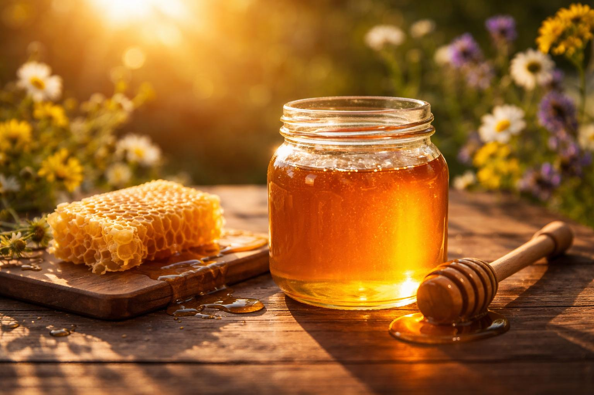

Skąd jest ten miód?
Zapytaj o miejsce pozyskania i ostatni zbiór. Przeczytaj informacje na etykiecie.
MAPA POLSKICH PASIEK
Odkryj pasieki w okolicy i znajdź swój ulubiony miód.
Znajdź pasiekę na mapie
PROSTO Z ULA
Wybierz kategorię. Poznaj smak, charakter i zastosowania produktów pszczelich.
MAŁE VADEMECUM
Kolor, aromat i konsystencja tworzą charakter miodu. Zacznij od tego, co lubisz.
Zajrzyj do dziennika ↗Wolisz delikatną słodycz? Poznaj akacjowy i rzepakowy. Jeśli szukasz wyrazistego aromatu, porównaj lipowy, gryczany i spadziowy. Opisy w katalogu ułatwią wybór; smak zmienia się także między zbiorami.
Krystalizacja jest naturalną zmianą konsystencji miodu. Jej tempo zależy między innymi od składu i przechowywania. Sama konsystencja nie rozstrzyga o autentyczności produktu.
Zakręcaj słoik i przechowuj go w suchym miejscu, z dala od słońca oraz źródeł ciepła. Korzystaj z czystej, suchej łyżki i sprawdzaj wskazówki producenta.
Nie podawaj miodu dzieciom poniżej 12. miesiąca życia. Miód jest żywnością, a nie zamiennikiem leczenia.
Zalecenia CDC dotyczące żywienia niemowląt ↗ŚWIADOMY WYBÓR
Bezpośrednia rozmowa pomaga poznać produkt. Domowe testy nie zastępują badania autentyczności.
Zapytaj o miejsce pozyskania i ostatni zbiór. Przeczytaj informacje na etykiecie.
Sprawdź odmianę, masę i skład. Miód z dodatkami to inny produkt niż sam miód.
Potwierdź cenę, dostępność i odbiór lub wysyłkę bezpośrednio u pszczelarza.
DZIENNIK MIODNEJ MAPY